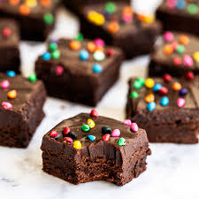

A chocolate brownie (commonly referred to as simply brownie) is a square or rectangular, baked, chocolate cake. Brownies come in a variety of forms and may be either fudgy or cakey, depending on their density. They may include nuts, frosting, cream cheese, chocolate chips, or other ingredients. A variation made with brown sugar and vanilla rather than chocolate in the batter is called a blond brownie or blondie. The brownie was developed in the United States at the end of the 19th century and popularized in the U.S. and Canada during the first half of the 20th century. Brownies are a form of sheet cookie. They are typically eaten by hand, often accompanied by milk, served warm with ice cream (a la mode), topped with whipped cream, or sprinkled with powdered sugar and fudge. In North America they are common homemade treats and they are also popular in restaurants[1] and coffeehouses.[5] One legend about the creation of brownies is that of Bertha Palmer, a prominent Chicago socialite whose husband owned the Palmer House Hotel. In 1893 Palmer asked a pastry chef for a dessert suitable for ladies attending the Chicago World's Columbian Exposition. She requested a cake-like confection smaller than a piece of cake that could be included in boxed lunches.[2] The result was the Palmer House Brownie with walnuts and an apricot glaze. The modern Palmer House Hotel serves a dessert to patrons made from the same recipe.[3] The name was given to the dessert sometime after 1893, but was not used by cook books or journals at the time.[2]  Mixing melted butter with chocolate to make a chocolate brownie The first-known printed use of the word "brownie" to describe a dessert appeared in the 1896 version of the Boston Cooking-School Cook Book by Fannie Farmer, in reference to molasses cakes baked individually in tin molds.[4] The earliest-known published recipes for a modern style chocolate brownie appeared in the Home Cookery (1904, Laconia, NH), Service Club Cook Book (1904, Chicago, IL), The Boston Globe (April 2, 1905 p. 34),[2] and the 1906 edition of Farmer cookbook. These recipes produced a relatively mild and cake-like brownie. By 1907 the brownie was well established in a recognizable form, appearing in Lowney's Cook Book by Maria Willet Howard (published by Walter M. Lowney Company, Boston) as an adaptation of the Boston Cooking School recipe for a "Bangor Brownie". It added an extra egg and an additional square of chocolate, creating a richer, fudgier dessert. The name "Bangor Brownie" appears to have been derived from the town of Bangor, Maine, which an apocryphal story states was the hometown of a housewife who created the original brownie recipe.[4] Maine food educator and columnist Mildred Brown Schrumpf was the main proponent of the theory that brownies were invented in Bangor.[a] While The Oxford Companion to American Food and Drink (2007) refuted Schrumpf's premise that "Bangor housewives" had created the brownie, citing the publication of a brownie recipe in a 1905 Fannie Farmer cookbook,[9] in its second edition, The Oxford Encyclopedia of Food and Drink in America (2013) said it had discovered evidence to support Schrumpf's claim, in the form of several 1904 cookbooks that included a recipe for "Bangor Brownies".[10] See also List of baked goods Hash brownie Notes Numerous works erroneously credit Schrumpf herself as the inventor.[5][6][7][8] References Saekel. Gage 2010. Palmer. The Nibble. Clegg 1998. Snow 2003. The Age 2005.